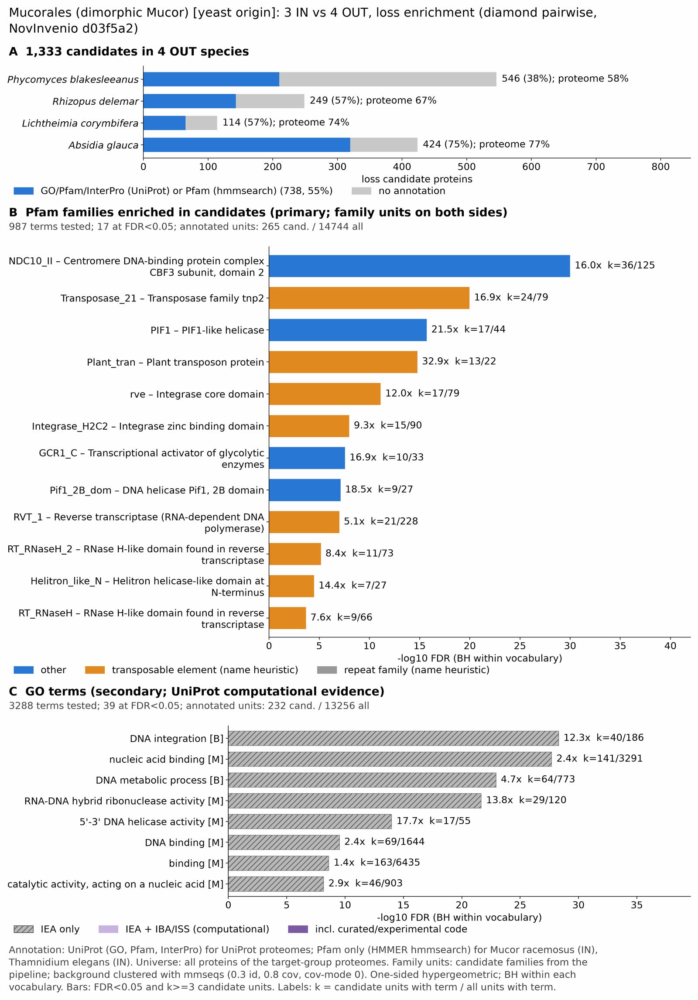

yc mucoromycota: functional enrichment (loss)
One-sided hypergeometric test per term; Benjamini-Hochberg FDR within each scope, level and vocabulary. Candidates are the loss candidates: gene families present in the OUT group and absent from the IN group. Universe: proteome. Background clustered: True (58755 sequences in 29659 clusters, mmseqs easy-cluster --min-seq-id 0.3 -c 0.8). Family level: one unit per candidate family and per background cluster.
Sources: Pfam: 2026-01-27-Pfam38.2; InterPro entries: 110.0; GO: releases/2026-07-26; analysis generated 2026-10-24T14:46:02. Source tables: /bigdata/stajichlab/jstajich/projects/NovInvenio_Investigations/studies/fungi/yeast_convergence/yc_mucoromycota/analysis/enrichment/outputs/loss/proteome_clustered.
Full record: PROVENANCE. Run report: report.html.
- Annotation provenance is not fully recorded: PROVENANCE.yaml lists the per-species annotation files and their checksums, but not the UniProt release they come from.
- GO results are secondary. GO annotations include computational evidence (IEA, IBA); the GO evidence column shows if a term has non-IEA support.
- Candidate families (pipeline clustering of candidates) and background clusters (mmseqs clustering of the background proteome) are made by different runs, so family-level counts are not fully comparable.
- Low annotation: the candidate set has less than 50% annotation for Pfam 43.6%, GO 35.1%. Enrichment for these vocabularies has low power.
Summary figure

Annotation coverage
Fraction of proteins with at least one term per vocabulary. Universe = all proteins of the species; candidates = the candidate set.
| Species | Set | Proteins | Pfam | Pfam clan | InterPro | GO | Any |
|---|---|---|---|---|---|---|---|
| Phycblak | universe | 16154 | 52.4% | 43.3% | 58.3% | 46.7% | 58.5% |
| Phycblak | candidates | 546 | 27.1% | 24.4% | 38.5% | 15.0% | 38.5% |
| Rhizdele | universe | 16971 | 60.9% | 51.5% | 66.8% | 55.9% | 67.1% |
| Rhizdele | candidates | 249 | 47.0% | 45.4% | 57.4% | 36.5% | 57.4% |
| Lichcory | universe | 12138 | 68.9% | 57.1% | 74.0% | 62.6% | 74.2% |
| Lichcory | candidates | 114 | 37.7% | 34.2% | 57.0% | 31.6% | 57.0% |
| Absiglau | universe | 14825 | 71.1% | 59.7% | 77.2% | 66.2% | 77.4% |
| Absiglau | candidates | 424 | 64.4% | 63.2% | 75.5% | 61.1% | 75.5% |
| ALL_OUT | universe | 60088 | 62.7% | 52.4% | 68.5% | 57.3% | 68.8% |
| ALL_OUT | candidates | 1333 | 43.6% | 41.5% | 55.4% | 35.1% | 55.4% |
Tests summary
Per vocabulary: terms with FDR < 0.05 / terms tested. Protein level counts proteins; family level counts candidate families and background clusters.
| Scope | Level | Cand. units | Pfam sig / tested | Pfam clan sig / tested | InterPro sig / tested | GO sig / tested |
|---|---|---|---|---|---|---|
| whole_set | family | 752 | 17 / 987 | 5 / 330 | 29 / 2067 | 39 / 3288 |
| whole_set | protein | 1333 | 19 / 2559 | 7 / 437 | 34 / 5664 | 52 / 4813 |
| Absiglau | family | 248 | 11 / 429 | 5 / 235 | 18 / 964 | 30 / 2211 |
| Absiglau | protein | 424 | 9 / 747 | 3 / 283 | 17 / 1655 | 15 / 2705 |
| Lichcory | family | 111 | 1 / 328 | 3 / 217 | 6 / 789 | 0 / 2258 |
| Lichcory | protein | 114 | 0 / 582 | 2 / 262 | 5 / 1311 | 0 / 2596 |
| Phycblak | family | 287 | 6 / 317 | 2 / 214 | 12 / 762 | 19 / 2028 |
| Phycblak | protein | 546 | 6 / 517 | 3 / 253 | 11 / 1241 | 30 / 2377 |
| Rhizdele | family | 179 | 11 / 394 | 4 / 229 | 18 / 924 | 20 / 2308 |
| Rhizdele | protein | 249 | 6 / 647 | 3 / 270 | 16 / 1498 | 35 / 2611 |
Top 25 Pfam terms (whole set, family level)
25 rows shown, ordered by FDR then p-value; 17 have FDR < 0.05 (bold). 14 are tagged TE: transposable-element families, flagged by name (heuristic, not a test).
| Term | Name | k / N cand. | n / M bg | Fold | FDR (BH) |
|---|---|---|---|---|---|
| PF16787 | NDC10_II: Centromere DNA-binding protein complex CBF3 subunit, domain 2 | 36 / 265 | 125 / 14744 | 16.024 | 9.83e-31 |
| PF02992 | Transposase_21: Transposase family tnp2 TE | 24 / 265 | 79 / 14744 | 16.903 | 1.05e-20 |
| PF05970 | PIF1: PIF1-like helicase | 17 / 265 | 44 / 14744 | 21.496 | 1.87e-16 |
| PF04827 | Plant_tran: Plant transposon protein TE | 13 / 265 | 22 / 14744 | 32.877 | 1.62e-15 |
| PF00665 | rve: Integrase core domain TE | 17 / 265 | 79 / 14744 | 11.973 | 7.43e-12 |
| PF17921 | Integrase_H2C2: Integrase zinc binding domain TE | 15 / 265 | 90 / 14744 | 9.273 | 1.00e-08 |
| PF12550 | GCR1_C: Transcriptional activator of glycolytic enzymes | 10 / 265 | 33 / 14744 | 16.86 | 2.69e-08 |
| PF21530 | Pif1_2B_dom: DNA helicase Pif1, 2B domain | 9 / 265 | 27 / 14744 | 18.546 | 7.45e-08 |
| PF00078 | RVT_1: Reverse transcriptase (RNA-dependent DNA polymerase) TE | 21 / 265 | 228 / 14744 | 5.125 | 9.96e-08 |
| PF17919 | RT_RNaseH_2: RNase H-like domain found in reverse transcriptase TE | 11 / 265 | 73 / 14744 | 8.384 | 6.74e-06 |
| PF14214 | Helitron_like_N: Helitron helicase-like domain at N-terminus TE | 7 / 265 | 27 / 14744 | 14.425 | 3.28e-05 |
| PF17917 | RT_RNaseH: RNase H-like domain found in reverse transcriptase TE | 9 / 265 | 66 / 14744 | 7.587 | 2.13e-04 |
| PF01498 | HTH_Tnp_Tc3_2: Transposase TE | 7 / 265 | 52 / 14744 | 7.49 | 0.003 |
| PF10551 | MULE: MULE transposase domain TE | 7 / 265 | 53 / 14744 | 7.348 | 0.003 |
| PF07885 | Ion_trans_2: Ion channel | 3 / 265 | 8 / 14744 | 20.864 | 0.020 |
| PF13975 | gag-asp_proteas: gag-polyprotein putative aspartyl protease TE | 5 / 265 | 34 / 14744 | 8.182 | 0.020 |
| PF12348 | CLASP_N: CLASP N terminal | 3 / 265 | 9 / 14744 | 18.546 | 0.026 |
| PF13358 | DDE_3: DDE superfamily endonuclease TE | 9 / 265 | 156 / 14744 | 3.21 | 0.113 |
| PF24626 | SH3_Tf2-1: Tf2-1-like, SH3 domain | 2 / 265 | 5 / 14744 | 22.255 | 0.161 |
| PF04434 | SWIM: SWIM zinc finger | 3 / 265 | 21 / 14744 | 7.948 | 0.297 |
| PF02148 | zf-UBP: Zn-finger in ubiquitin-hydrolases and other protein | 2 / 265 | 11 / 14744 | 10.116 | 0.748 |
| PF00013 | KH_1: KH domain | 2 / 265 | 13 / 14744 | 8.56 | 0.988 |
| PF31073 | DUF8803: Domain of unknown function (DUF8803) | 3 / 265 | 39 / 14744 | 4.28 | 1.000 |
| PF14529 | Exo_endo_phos_2: Endonuclease-reverse transcriptase TE | 3 / 265 | 46 / 14744 | 3.629 | 1.000 |
| PF03184 | DDE_1: DDE superfamily endonuclease TE | 2 / 265 | 23 / 14744 | 4.838 | 1.000 |
Top 25 InterPro terms (whole set, family level)
25 rows shown, ordered by FDR then p-value; 25 have FDR < 0.05 (bold).
| Term | Name | k / N cand. | n / M bg | Fold | FDR (BH) |
|---|---|---|---|---|---|
| IPR031872 | Domain:Ndc10, domain 2 | 36 / 386 | 125 / 16602 | 12.387 | 2.98e-26 |
| IPR038279 | Homologous_superfamily:Ndc10, domain 2 superfamily | 41 / 386 | 205 / 16602 | 8.602 | 1.06e-23 |
| IPR036397 | Homologous_superfamily:Ribonuclease H superfamily | 59 / 386 | 478 / 16602 | 5.309 | 1.52e-23 |
| IPR043502 | Homologous_superfamily:DNA/RNA polymerase superfamily | 49 / 386 | 325 / 16602 | 6.485 | 3.36e-23 |
| IPR043128 | Homologous_superfamily:Reverse transcriptase/Diguanylate cyclase domain | 36 / 386 | 184 / 16602 | 8.415 | 1.33e-20 |
| IPR001584 | Domain:Integrase, catalytic core | 29 / 386 | 112 / 16602 | 11.137 | 5.00e-20 |
| IPR004242 | Family:Transposon, En/Spm-like | 24 / 386 | 79 / 16602 | 13.066 | 3.19e-18 |
| IPR010285 | Domain:DNA helicase Pif1-like, DEAD-box helicase domain | 17 / 386 | 44 / 16602 | 16.618 | 1.20e-14 |
| IPR006912 | Family:Harbinger transposase-derived protein | 13 / 386 | 22 / 16602 | 25.415 | 4.49e-14 |
| IPR012337 | Homologous_superfamily:Ribonuclease H-like superfamily | 30 / 386 | 204 / 16602 | 6.325 | 1.31e-13 |
| IPR053134 | Family:RNA-directed DNA polymerase homolog | 13 / 386 | 41 / 16602 | 13.637 | 8.72e-10 |
| IPR041588 | Domain:Integrase zinc-binding domain | 15 / 386 | 90 / 16602 | 7.168 | 3.75e-07 |
| IPR022210 | Domain:Transcription activator GCR1-like domain | 10 / 386 | 33 / 16602 | 13.033 | 3.75e-07 |
| IPR049163 | Domain:DNA helicase Pif1-like, 2B domain | 9 / 386 | 27 / 16602 | 14.337 | 8.65e-07 |
| IPR052146 | Family:High-osmolarity-induced transcription | 8 / 386 | 20 / 16602 | 17.204 | 1.08e-06 |
| IPR007527 | Domain:Zinc finger, SWIM-type | 13 / 386 | 74 / 16602 | 7.556 | 1.78e-06 |
| IPR000477 | Domain:Reverse transcriptase domain | 22 / 386 | 236 / 16602 | 4.009 | 4.24e-06 |
| IPR021109 | Homologous_superfamily:Aspartic peptidase domain superfamily | 19 / 386 | 187 / 16602 | 4.37 | 8.92e-06 |
| IPR052338 | Family:Transposase_5 | 9 / 386 | 42 / 16602 | 9.217 | 4.45e-05 |
| IPR041577 | Domain:Reverse transcriptase/retrotransposon-derived protein, RNase H-like domain | 11 / 386 | 73 / 16602 | 6.481 | 9.40e-05 |
| IPR025476 | Domain:Helitron helicase-like domain | 7 / 386 | 27 / 16602 | 11.151 | 2.03e-04 |
| IPR041373 | Domain:Reverse transcriptase, RNase H-like domain | 9 / 386 | 66 / 16602 | 5.865 | 0.002 |
| IPR002492 | Domain:Transposase, Tc1-like | 7 / 386 | 52 / 16602 | 5.79 | 0.017 |
| IPR018289 | Domain:MULE transposase domain | 7 / 386 | 53 / 16602 | 5.681 | 0.018 |
| IPR011010 | Homologous_superfamily:DNA breaking-rejoining enzyme, catalytic core | 5 / 386 | 28 / 16602 | 7.68 | 0.035 |
Top 15 GO terms (whole set, family level) — secondary, computational evidence (IEA/IBA) included
15 rows shown, ordered by FDR then p-value; 15 have FDR < 0.05 (bold).
| Term | Name | k / N cand. | n / M bg | Fold | FDR (BH) | GO evidence | Families with non-IEA |
|---|---|---|---|---|---|---|---|
| GO:0015074 | biological_process:DNA integration | 40 / 232 | 186 / 13256 | 12.288 | 5.11e-29 | IEA_only | 0 |
| GO:0003676 | molecular_function:nucleic acid binding | 141 / 232 | 3291 / 13256 | 2.448 | 2.05e-28 | IEA_only | 0 |
| GO:0006259 | biological_process:DNA metabolic process | 64 / 232 | 773 / 13256 | 4.731 | 1.19e-23 | IEA_only | 0 |
| GO:0004523 | molecular_function:RNA-DNA hybrid ribonuclease activity | 29 / 232 | 120 / 13256 | 13.808 | 2.19e-22 | IEA_only | 0 |
| GO:0016891 | molecular_function:RNA endonuclease activity producing 5'-phosphomonoesters, hydrolytic mechanism | 29 / 232 | 147 / 13256 | 11.272 | 8.69e-20 | IEA_only | 0 |
| GO:0004521 | molecular_function:RNA endonuclease activity | 29 / 232 | 170 / 13256 | 9.747 | 5.31e-18 | IEA_only | 0 |
| GO:0004540 | molecular_function:RNA nuclease activity | 29 / 232 | 215 / 13256 | 7.707 | 3.65e-15 | IEA_only | 0 |
| GO:0004519 | molecular_function:endonuclease activity | 29 / 232 | 224 / 13256 | 7.397 | 9.96e-15 | IEA_only | 0 |
| GO:0043139 | molecular_function:5'-3' DNA helicase activity | 17 / 232 | 55 / 13256 | 17.661 | 1.04e-14 | IEA_only | 0 |
| GO:0004518 | molecular_function:nuclease activity | 29 / 232 | 300 / 13256 | 5.523 | 1.98e-11 | IEA_only | 0 |
| GO:0000723 | biological_process:telomere maintenance | 17 / 232 | 85 / 13256 | 11.428 | 2.51e-11 | IEA_only | 0 |
| GO:0032200 | biological_process:telomere organization | 17 / 232 | 86 / 13256 | 11.295 | 2.82e-11 | IEA_only | 0 |
| GO:0003677 | molecular_function:DNA binding | 69 / 232 | 1644 / 13256 | 2.398 | 3.08e-10 | IEA_only | 0 |
| GO:0003678 | molecular_function:DNA helicase activity | 17 / 232 | 102 / 13256 | 9.523 | 4.55e-10 | IEA_only | 0 |
| GO:0005488 | molecular_function:binding | 163 / 232 | 6435 / 13256 | 1.447 | 2.51e-09 | IEA_only | 0 |
Actin cytoskeleton controls
Known actin-related families and how many of their proteins pass each filter. Protein ID columns are left out.
| control | pfam_ids | desc_regex | OUT_universe | OUT_in_matrix | OUT_pass_outgroup_rule | candidates | near_miss_in1 | near_miss_in2 | n_Phycblak | n_Rhizdele | n_Lichcory | n_Absiglau | n_Mcir | n_Mucorace | n_Thameleg |
|---|---|---|---|---|---|---|---|---|---|---|---|---|---|---|---|
| Arp2/3 ARPC2 (P34-Arc) | PF04045 | 5 | 5 | 5 | 0 | 0 | 0 | 1 | 1 | 1 | 2 | 1 | 1 | 1 | |
| Arp2/3 ARPC3 (P21-Arc) | PF04062 | 3 | 3 | 3 | 0 | 0 | 0 | 1 | 0 | 1 | 1 | 1 | 1 | 1 | |
| Arp2/3 ARPC4 | PF05856 | 5 | 5 | 5 | 0 | 0 | 0 | 1 | 2 | 1 | 1 | 1 | 1 | 1 | |
| Arp2/3 ARPC5 (P16-Arc) | PF04699 | 3 | 3 | 3 | 0 | 0 | 0 | 1 | 1 | 0 | 1 | 1 | 1 | 1 | |
| Arp2/3 ARPC1 (description only) | arp2/3 complex.*(41|p41|subunit 1)|ARPC1 | 0 | 0 | 0 | 0 | 0 | 0 | 0 | 0 | 0 | 0 | 0 | 0 | 0 | |
| Arp2 / Arp3 (description only) | actin-related protein (2|3)\b|\bARP[23]\b | 25 | 25 | 25 | 0 | 0 | 0 | 5 | 7 | 5 | 8 | 6 | 0 | 0 | |
| WAVE complex NCKAP1 | PF09735 | 0 | 0 | 0 | 0 | 0 | 0 | 0 | 0 | 0 | 0 | 0 | 0 | 0 | |
| WAVE complex CYFIP (FragX_IP) | PF05994 | 0 | 0 | 0 | 0 | 0 | 0 | 0 | 0 | 0 | 0 | 0 | 0 | 0 | |
| WAVE complex ABI | PF07815|PF27594 | 0 | 0 | 0 | 0 | 0 | 0 | 0 | 0 | 0 | 0 | 0 | 0 | 0 | |
| SCAR/WAVE (SCAR_helical) | PF27569 | 0 | 0 | 0 | 0 | 0 | 0 | 0 | 0 | 0 | 0 | 0 | 0 | 0 | |
| WASP family (WH1) | PF00568 | 5 | 5 | 5 | 0 | 0 | 0 | 1 | 1 | 1 | 2 | 3 | 3 | 3 | |
| WH2 motif (WASP, WAVE, others) | PF02205 | 6 | 6 | 6 | 0 | 0 | 0 | 0 | 1 | 2 | 3 | 2 | 2 | 2 | |
| Formin FH2 | PF02181 | 28 | 28 | 28 | 0 | 0 | 0 | 3 | 9 | 7 | 9 | 8 | 7 | 7 | |
| Formin Drf_GBD / Drf_FH3 / Drf_DAD | PF06371|PF06367|PF06345 | 34 | 34 | 34 | 0 | 0 | 0 | 6 | 11 | 7 | 10 | 8 | 8 | 8 | |
| Ena/VASP (VASP_tetra) | PF08776 | 0 | 0 | 0 | 0 | 0 | 0 | 0 | 0 | 0 | 0 | 0 | 0 | 0 | |
| Coronin (description only) | coronin | 10 | 10 | 10 | 0 | 0 | 0 | 2 | 3 | 2 | 3 | 1 | 0 | 0 | |
| Cortactin (HS1_rep) | PF02218 | 0 | 0 | 0 | 0 | 0 | 0 | 0 | 0 | 0 | 0 | 0 | 0 | 0 | |
| Myosin 2 tail (Myosin_tail_1) | PF01576 | 0 | 0 | 0 | 0 | 0 | 0 | 0 | 0 | 0 | 0 | 0 | 0 | 0 | |
| Myosin head (all myosins) | PF00063 | 67 | 67 | 67 | 0 | 0 | 0 | 16 | 19 | 14 | 18 | 17 | 17 | 16 |
Page written by bin/generate_enrichment_page.py.